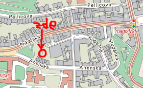
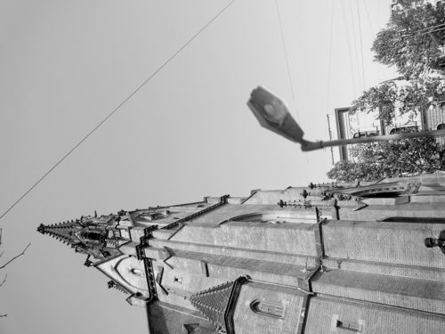
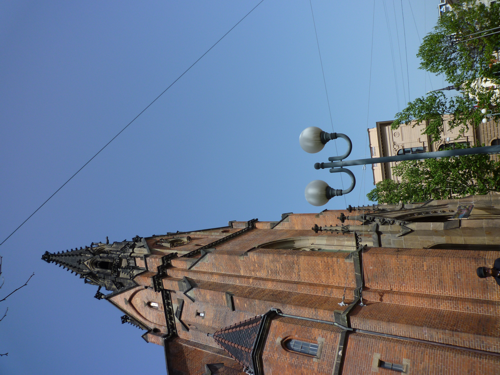
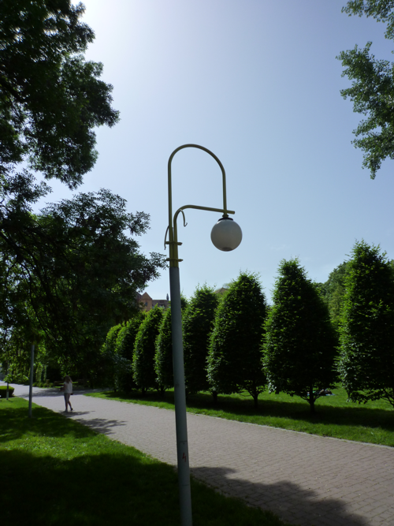

Po hře
Aneb popis, co jste ve hře mohli potkat
První fáze hry
V první části hry Včera, dnes a zítra se utkalo 20 různých týmů. Každý tým byl pětičlenný a hrál za jednu osobu (pod jedním jménem). Každý z pěti hráčů představoval jeden z pracovních dnů své osoby (např. STANDA, pondělí atd.), všechny dny se odehrávaly současně, 10 minut reálného času představovalo jednu hodinu času herního. Hráči na startu získali diář s hromadou schůzek a úkolů na celý pracovní týden a bylo na nich, jakou strategii zvolí a jak se zkoordinují tak, aby toho stihli co nejvíce. Některé úkoly pak byly zadány jiný den, než bylo očekáváno jejich řešení (hráči si tak museli tuto informaci předat). V průběhu pracovního týdne mohli hráče potkat tyto úkoly a aktivity:
Spartakiáda
Hráči si nacvičovali sestavu na spartakiádu. Heslo bylo získáno za aktivní účast v nácviku.
Kuličky
Dvojice protihráčů soutěžila v kuličkách podle těchto pravidel:
Cílem hry je dostat všech svých 5 kuliček do důlku jako první. Hrají vždy 2 účastníci proti sobě. Nejdříve každý hráč z dvojice hodí od čáry k důlku 1 kuličku = rozhoz, kdo je blíž, tak začíná. Kuličku z rozhozu si hráči vezmou zpět. První hází všech svých 5 kuliček z čáry k důlku a snaží se jej zasáhnout; poté hází soupeř. V další části hry se pokračuje cvrnkáním, každý cvrnká jen do svých kuliček a hráči se střídají po 1 cvrnknutí. Kdo má všechny kuličky v důlku, vyhrává, získává kód a může pokračovat dál. Poražený může vyzvat jiného poraženého a pokusit se znovu o výhru.
Vítěz z dvojice získal heslo, poražený se mohl pokusit znovu o vítězství s jiným poraženým v době otevření stanoviště, tj. 25 minut.
Skákání přes gumu
Hráči se účastnili mezinárodního závodu ve skákání přes gumu. Museli se naučit sestavu, kterou posléze předvedli organizátorům k hodnocení.
Piknik
Hráči si užívali piknik při hitech z minulého století. V každé písni ale vlivem stáří nahrávky chybělo jedno slovo. Z prvních písmen těchto slov vznikla tajenka.
Demonstrace
Při této aktivitě se běhalo, jedly třešně a peckami se plivalo na přesnost do kýblů s demonstračními hesly..
Film v televizi (Alexandr Hemala)
Hráči měly za úkol poznat z nahraných úvodníků k filmům (takových, jaké hlásili televizní hlasatelé), o které filmy se jedná. Fígl byl v tom, že se nejednalo o filmy, ale večerníčky, které byly zakamuflovány do filmového hávu (např. Maxipes Fík byl horor o tom, jak se z nevinného domácího mazlíčka stala ohromná příšera).
Kazeta
Hráč ÚTERÝ obdržel kazetu s nahrávkou básně Úderníci na recitační soutěž, která se konala ve ČTVRTEK. Cílem bylo přehrát si někde kazetu a následně přednést báseň.
Běh osvobození
No tomto úkolu se běhal netradiční orientační běh s velmi podrobnou mapou.
Sběr papíru
Cílem úkolu bylo nasbírat co nejpřesněji 1 kg papíru a přinést do sběrny. Za přesnost byly získávány body, tzn. 5 bodů = 1 kg ± 100 g až 1 bod = 1 kg ± 500 g.
Jen počkej, zajíci aneb Pan Vajíčko
Úkolem hráčů bylo dostat vajíčko z místa A do místa B, přičemž vajíčko bylo možné pouze házet.
Vernisáž
Na vernisáži hráči hodnotili komiksové výtvory svých kolegů z předešlého dne. Přitom dostali rakvičku se šlehačkou, uvnitř které bylo heslo.
Dopis z Ruska
Pošťák doručil hráčům dopis psaný azbukou. Úkolem bylo dopis přečíst (třeba za pomoci kolemjdoucích) a získat z něj heslo - tím bylo slovo, které se opakovalo v každé větě.
Vyhlížíme Gagarina
Hráči pozorovali okolí nad sebou, úkolem bylo poznat zajímavá místa v prostředí hry.
Přednáška z matematiky
Hráči se na pondělní přednášce naučili něco o hře Balónky (Hackenblush) a měli za domácí úkol vyřešit 5 zadání a odevzdat ve středu večer na jiném místě. Hackenblush je logická hra, více třeba zde: http://en.wikipedia.org/wiki/Hackenbush. Podle počtu správných odpovědí jim učitel napsal heslo.
Staré cedule
Ve výloze jednoho obchodu v centru se nacházely staré a nové cedule (loga) známých výrobků. Úkolem bylo je spárovat a z prvních písmen získat heslo.
Dopravní značení
Účastníci dostali popis cesty na kole. Cílem bylo pochopit kudy vede především na základě dopravního značení. Na konci cesty byl ukrytý parčík, který málokdo zná:

Na trámku houpačky byl zespoda nalepený kód.
Staré časy
Hráči se sešli u šálku čaje v kavárně s babičkou, která si nemohla vzpomenout na jí dříve známá místa v Brně. Hráči jí je pomáhali dle starých fotografií místa identifikovat.
Čtyřlístek
Úkolem hráčů bylo vytvořit v prázdných bublinách komiksu Čtyřlístek nápaditý příběh. Originalitu pak hodnotili hráči jiného dne na úkolu Vernisáž. Podle hodnocení pak tvůrci získali některé z hesel, pro které si po vernisáži mohli přijít.
Orloj
Účastníci dostali následující zadání: “Je potřeba udělat mezinárodní družbu. Vaším úkolem je spolu s jedním nehrajícím našincem (z Československa) a jedním nehrajícím cizincem (a nesmí to být Slovák) obejmout tyto hodiny.” Objímal se “brněnský orloj”. Pokud se jim ho podařilo včas splnit, získali od přihlížejícího organizátora kód.
Schůzka se soudruhem z Gottwaldova
Účastníci získali arch, kde byly fotky různých míst, kterým vždy dominovala lampa pouličního osvětlení. Ale všechny reálné lampy byly nahrazeny jednou unifikovanou, což maskovalo, jaké mají lampy ve skutečnosti tvary. Když ta místa oběháte, tak zjistíte, že ty lampy mají tvary písmenek. Některé tvary lamp musely být orotovány, aby vyšla písmenka, proto byly stejným způsobem orotovány i fotky míst. Např. písmeno B:
 
Nejkurióznější byla patrně lampa v Tyršových sadech - tvar písmene A:

Technologická inovace
Tato aktivita byla směřována na šikovnost a úkolem bylo sestrojit z daného materiálu podle návodu funkční samohyb poháněný stočenou leteckou gumou. V závislosti na kvalitě provedení poté hráč více či méně úspěšně projel patnáctimetrový rovný úsek (plný počet bodů byl za jízdu se 2 nataženími).
Při konstrukci samohybů a jejich ovládání se často vyskytují tyto chyby:
- špatné otočení rotujícího vršku → vysoké tření → skoro to nejede
- špatné vycentrování osy → hodně zatáčí
- přetažení gumy → roztočí se tak, že tření kol není dostatečné a v podstatě se protočí smykem na místě
Disident
Hráči měli za úkol kontaktovat disidenta u kostela sv. Jakuba, který jim předal tajnou zprávu a informaci, že si mají najít plnící pero. Zpráva byla napsaná zmizíkem - tedy po potření inkoustem se objevilo heslo.
Fronta na banány
V průběhu hry několikrát dorazila zásilka banánů. Několik prvních lidí ve frontě je získalo, ostatní měli smůlu.
Céčka
V tomto úkolu na začátku získali hráči na prvním ze stanovišť pytlík s céčky, která následně buď vyměňovaly nebo o ně hráli. V určité časy se na určitých místech zjevovali překupníci, se kterými se dalo hrát nebo obchodovat. Vyhlášené sestavy se daly vyměnit za různě cenná hesla.
Vystřihovánky z ABC
V tomto úkolu na začátku dostali hráči neslepená foukací autíčka. Cílem úkolu bylo autíčka slepit, vyvážit plastelínou a svým mocným dechem je dostat přes dráhu nakreslenou křídou na chodníku. Čím méně fuků bylo třeba tím více bodů hráči získali.
Branná výchova
V tomto úkolu na začátku dostali hráči stříkací pistolky na vodu a jejich úkolem bylo sestřelit pytlík, ve kterém bylo heslo. Celá aktivita byla pro osvěžení a byla dílem naprosté náhody. Kdo si vybral špatný pytlík dostal pouze jeden bod a kdo zvolil správně a štěstí mu přálo dostal bodů pět.
Test vybavení na víkend
Tento úkol byl velmi jednoduchý. Postavit stan typu A a náhodného kolemjdoucího přemluvit, aby s hráčem do stanu vlezl a nechal se zavřít. Pokud to dobře dopadlo a povedlo se, tím byl úkol splněn.
Zkouška naložení auta
Hráčům bylo přiděleno auto a věci, které je do něj třeba nacpat tak, aby vše bylo zavřené a bezpečně připevněné. Museli mezi nic netušícími lidmi také najít čtyři dobrovolníky, kteří se do vozidla vešli s nimi. Pokud se jim se všemi věcmi, lidmi i jimi samými podařilo zavřít dveře a zamávat z okýnek a vykřiknout heslo “HURÁ NA CHATU”, úkol byl splněn.
Videostop
Klasická hra Videostop s Janem Rosákem ve zrychlené verzi. Kdo dostal nejvíce bodů a věděl nejvíce správných odpovědí z filmových ukázek, ten si také mohl odnést nejvíce bodů do celé hry.
Druhá fáze hry
V druhé části hry již hrály celé týmy. A protože po pracovním týdnu je třeba si odpočinout, nesla se tato část ve znamení shánění pochutin na víkendový večírek na chatě. U souseda řezníka šlo získat za správné poskládání zvířat špekáčky, v Jednotě zas za správnou cenu nákupu lančmít. V hospodě se běhala překážková dráha s táckem plným panáků zelené (za bečku), v domácí palírně se za konstrukční úkol s naléváním vody z lahve do kelímku získávalo čůčo. Pokud se hráči stavili za místní kapelou a správně zahráli píseň na roztodivné nástroje, získali na víkendový večer hudbu a za vystřižení šatů jednou rukou a ošacení papírové panny potom i oblečení.
Když už měl tým špekáčky i lančmít, mohl se pokusit o přípravu jídla (hrál se curling s konzervami na namydlené gumové dráze), s bečkou a čůčem se bojovalo o pití (shazování lidských kuželek velkým prakem), no a se zajištěnou hudbou a oblečením se získávala zábava na balancovníku (hráči drželi velkou desku a snažili se kuličkou projet bludištěm). Všechny propriety byly za body, dokonce se dal získat i bonus při splnění všech úkolů.
Body z pracovního týdne a víkendu se pak sečetly, byly vyhlášeny výsledky (vítězné týmy Matylda, Mstislav a Alan si odnesly síťovky, knihy a céčka) a následoval menší raut (když už hráči získali tolik surovin). Součástí rautu byly utopenci, domácí buchty, česneková pomazánka, klobásky atp. Pivo se točilo přímo v kavárně Trojka, která nám poskytla zázemí na celou hru - mockrát děkujeme!
Závěrem
Věříme, že si hru i večírek všichni užili dle svého gusta (i přes vedro, plný diář a drobné zmatky) a třeba se na nějaké podobné akci někdy v budoucnu setkáme! Výsledky naleznete v příslušné sekci, fotky jsme nahráli na Rajče (jméno: vcera, heslo: [to, co se rozdávalo na Zelňáku]).
Díky za nadšení a energii, a to jak Včera, Dnes, tak i Zítra! Byli jste skvělí!
Finn, Irča, Janka, Kačíí, Mates, Peťa, Veru, Žížal